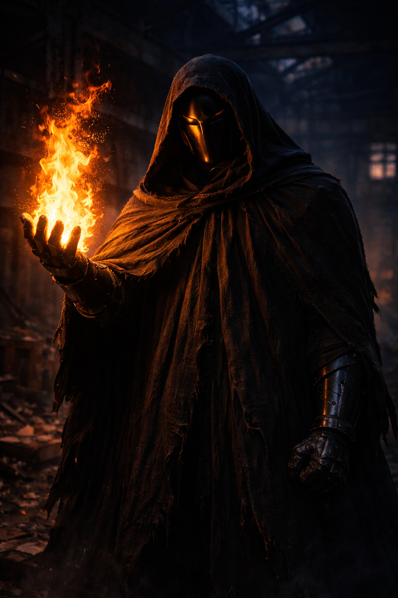

На данном сайте содержится информацию о произведении "От предвечной Тьмы к лунному Свету". Среди этой информации имеется большое количество сюжетных спойлеров.
Маска
«Я жду боя с равным. Не с жалким больным человеком».
— Маска в одном из снов Игоря.
Маска — загадочная фигура, регулярно появляющаяся в сновидениях Игоря Меркулова после обретения им божественной силы. Первоначально воспринимаемый Игорем как потенциальный враг или другой обладатель магических способностей, персонаж оказался глубоким ментальным отражением внутренней борьбы героя, его страхов и растущего могущества.

×
Маска
Вид:Ментальный образ / Отражение
Статус:Существует в подсознании
Способности:Магия огня высшего уровня
Снаряжение:Чёрная мантия, углеродная броня
Первое появление:Глава 12 (сон)
Внешность
Маска описывается как мощная фигура с широкими плечами и массивными руками. Образ персонажа претерпевал изменения по мере развития сюжета:
Первоначальный облик: Фигура, облачённая в плотную чёрную мантию и гладкую чёрную маску с прорезями для глаз, полностью скрывающую лицо.
Истинный вид: Под сгорающей мантией обнаружился доспех, выполненный из гладкого чёрного материала (позже идентифицированного как углеродная структура). Доспех включает в себя кирасу, наплечники и защиту конечностей.
Появления в сновидениях
Все встречи Игоря с Маской происходят в одной и той же локации — заброшенном цеху с бетонными стенами, ржавыми станками и разбитыми окнами. Бои неизменно сопровождаются специфическим музыкальным ритмом — барабанами и струнными (саундтрек «Agni Kai»).
Этапы противостояния:
Доминирование Маски: В первых снах Маска значительно превосходит Игоря в мастерстве владения огнём. Его удары точны и мощны, в то время как Игорь вынужден лишь обороняться и уклоняться. В этих сражениях Игорь обнаружил, что в присутствии Маски его магия воздуха и воды не работает, оставляя доступным только пламя.
Пробуждение воли: В период болезни Игоря Маска проявил суровость, приказав герою «Встать!» и отказавшись сражаться со слабым противником. Этот инцидент стал катализатором магического выздоровления Игоря в реальности.
Равенство: Со временем Игорь начал копировать движения Маски, переходя от интуитивного противодействия к холодному расчёту. В последних зафиксированных снах Игорь сражался с Маской на равных, успешно блокируя его атаки и нанося ответные удары.
Природа и личность
Сущность Маски долгое время оставалась загадкой. Игорь предполагал наличие второго бога или мага, однако Йельшас не обнаружил в реальности никаких следов иных сверхъестественных существ.
Теория Риты: Рита Кушнарёвская выдвинула гипотезу, что Маска — это не посторонний маг, а сам Игорь, сражающийся со своей собственной тенью или будущим воплощением. Эта теория подтверждается тем, что Игорь подсознательно начал копировать стиль боя Маски и его экипировку.
Маска воплощает в себе:
Стремление к силе: Безжалостность и эффективность, необходимые для деятельности «Чайного Мстителя».
Защитный механизм: Желание Игоря стать неуязвимым («Вам меня не одолеть!»).
Учителя: Маска подталкивает Игоря к развитию контроля и дисциплины, необходимых для владения силой.
Влияние на реальность
Несмотря на то, что Маска является порождением снов, он оказал фундаментальное влияние на действия Игоря в физическом мире:
Экипировка:Игорь отказался от использования обычной балаклавы в пользу маски, дизайн которой он заимствовал из своих снов.
Углеродная броня: Сама идея создания сверхпрочного доспеха из углерода была вдохновлена внешним видом противника из сна.
Самоидентификация: Сражения с Маской помогли Игорю осознать риски потери человечности и превращения в «монстра в чёрной броне», что в итоге привело его к решению оставить путь насилия.
Интересные факты
В своих снах Игорь слышал музыку из мультсериала «Легенда об Аанге», хотя не смотрел его с десятилетнего возраста; опознать трек ему помогла Рита.
Маска — единственный персонаж, чьи слова («Встань!») оказали прямое воздействие на физическое состояние Игоря в реальности.
Финальный вариант углеродной брони и маски Игоря хранится у него в шкафу как память, хотя он так ни разу и не применил их в настоящем бою.
Этот сайт делает вид, что использует cookie, но на самом деле просто показывает вам ебучее всплывающее окно